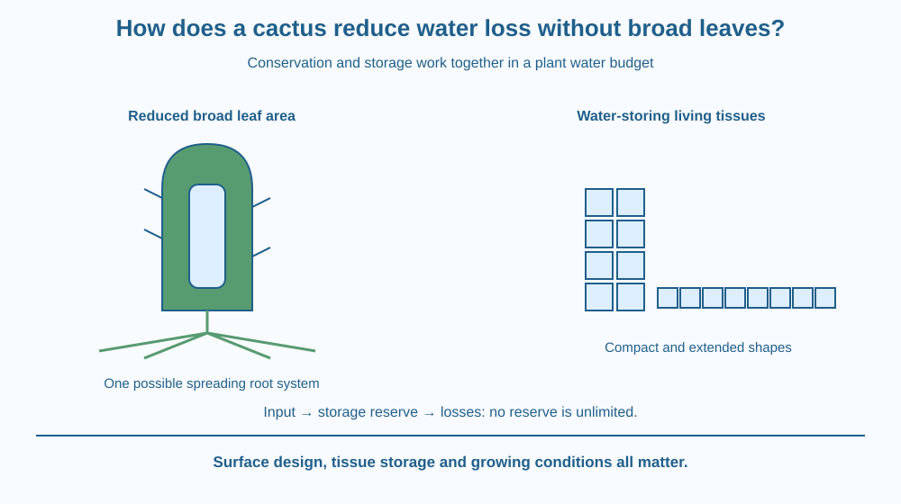

Explain how a cactus can limit water loss while storing water in living tissues. Connect reduced leaf area, protective surfaces and succulent stems to their functions. Recognise variation among desert plants rather than assigning every species the same roots or water strategy.
A cactus growing in a dry setting may have a thick green stem and spines instead of broad leaves. Beside it, a broad-leaved garden plant might wilt much sooner under the same brief observation. Shape alone does not tell the whole story, but it gives clues about water use.
Why would reducing leaves help? Where can water be stored? And how can a plant still have a green surface when the familiar leaf shape is missing? Answering these questions links several features into a water-management strategy rather than treating spines as decorative armour.
Plants must obtain and use water while avoiding excessive loss. Water can leave exposed plant surfaces, especially through gas-exchange openings. The rate depends on temperature, humidity, airflow, surface properties and how openings are regulated.
Many cacti have leaves reduced to spines and green stems that perform important functions usually associated with broad green organs. Reducing broad leaf area can reduce the area exposed to water loss. Spines can also affect shading and airflow near the surface, although their roles differ among species.
A cuticle is a protective surface layer that helps limit water movement across the outer surface. A waxy appearance is not a perfect measure of its effectiveness. The structure and properties matter more than simply whether a student thinks the surface looks shiny.
Succulence means having specialised water-storing tissues. In many cacti, the stem can store water acquired during favourable periods. A fleshy stem is living tissue, not an empty bottle filled with freely drinkable water. Its internal structure also supports growth and transport.
Stored water can buffer the plant during a dry period. Storage alone would not be enough if the plant lost water too quickly. Conservation and storage therefore work together: one limits outflow, while the other provides a reserve.
Roots obtain water from the surroundings, but there is no single cactus root design. Some species have extensive relatively shallow systems that can use brief surface wetting. Other root arrangements occur too. The statement that every desert plant must have one extremely deep root is false.
Some cacti use a timing pattern in which gas exchange is concentrated at night. This can reduce water loss under some conditions. The detailed biochemical pathway is beyond today's focus, and it is not a universal feature of every plant from a dry habitat.
Adaptations involve trade-offs. A plant built to conserve water may grow more slowly under some conditions or use resources differently from a fast-growing broad-leaved plant. No feature makes a cactus indestructible, and too much water or unsuitable drainage can still cause problems.
Imagine a water budget with an input, a reserve and an output. Roots influence input; water-storing tissues contribute to the reserve; reduced exposed area and protective surfaces influence output. Put each plant feature beside the relevant part of the budget.
Do not draw the reserve as unlimited. If loss continues and input remains absent, stored water declines. A useful model can explain both surviving a dry spell and eventually being harmed by prolonged shortage.
Then compare a thick stem with a broad thin leaf. Their different shapes affect the balance between exposed surface and internal volume. Shape is one part of the explanation, alongside living tissue behaviour and the surrounding conditions.
The SVG shows a cactus outline with a thick green stem, spines and a simplified internal water-storage region. Separate labels connect each feature with a role in the water budget.
A root sketch illustrates one possible spreading shallow system and is explicitly labelled as an example. It does not represent every cactus. A second comparison uses equal-volume block shapes to distinguish compact storage from extensive exposed surface.
The diagram avoids detailed gas-exchange control, which is reserved for a later lesson. Here the focus remains the combined effect of surface design and storage rather than one pore's opening mechanism.

Cacti are grown in many Indian home and school gardens, while a range of other succulent plants are also cultivated. Not every spiny or fleshy plant is a cactus, so a visual resemblance should not replace identification.
A plant sold as drought tolerant still needs appropriate care. A pot can hold too much water if its drainage is unsuitable, and roots can be affected by prolonged wet conditions. Surviving dryness does not mean benefiting from every possible environment.
Do not cut a cactus to inspect stored water. Spines can injure skin, and some cactus-like plants contain irritating sap. Photographs and diagrams provide the needed evidence without damaging a living plant.
Use paper, a pencil and eight identical small building blocks, if available. A drawing can replace the blocks.
The blocks do not model living tissues or exact plant water loss. Keep the total number of blocks unchanged so the comparison concerns shape. Do not handle a real spiny plant or claim that counting block faces predicts a cactus's daily water use.
A plant has a large internal water reserve but an enormous unprotected exposed surface. Another has a smaller reserve but loses water slowly. Why might storage alone fail to predict which lasts longer during a dry period?
Use the input–reserve–output model to explain your reasoning. Include the possibility that the environment changes, because a windy dry afternoon can alter the loss rate without changing the plant's stored volume immediately.
What does succulence refer to?
Answer: A — Succulent organs contain tissues adapted for storing water.
Why can reduced broad leaf area help conserve water?
Answer: C — Less exposed broad surface can contribute to lower water loss.
Which claim about cactus roots is most reasonable?
Answer: B — Different species can have different systems, including spreading shallow roots.
Design a labelled model of a dry-habitat plant using three different water-related features. One must concern storage and another must concern limiting loss. Explain the role of the third.
Add a sentence stating a trade-off or limitation. Avoid giving your plant magical abilities such as unlimited storage or survival without water forever. Also avoid claiming that all desert plants use your chosen root arrangement.
A water-conserving plant solves a budget problem, not just a storage problem. A large reserve is useful only in relation to how quickly it is spent and how often it is replenished. Looking at the thick stem alone misses the surface features and environmental conditions that determine that balance.
Many cacti combine reduced broad leaf area, protective surfaces and succulent storage; their water balance depends on inputs, reserves and losses together.